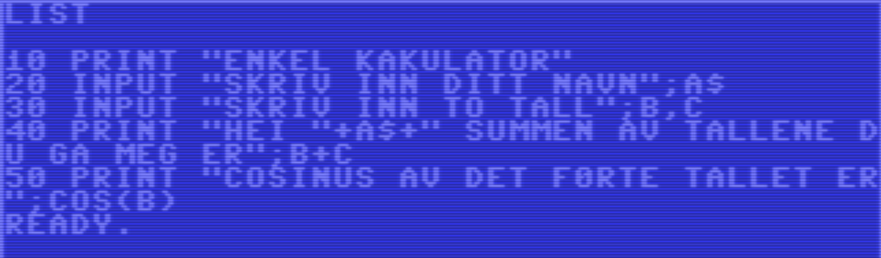
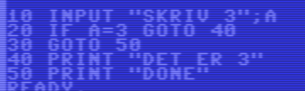
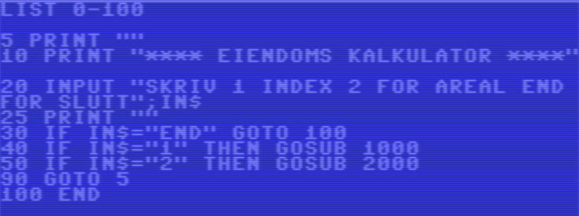
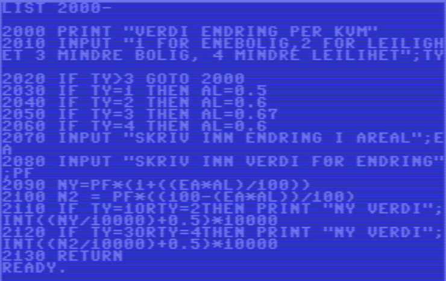

Intro til C64 BASIC
BASIC (Beginners' All-purpose Symbolic Instruction Code) språket ble utviklet 1964 av John G. Kemeny og Thomas E. Kurtz ved Dartmouth College i Dartmouth College, New Hampshire, USA. Ideen var å lage et språk som utenfor vitenskapelige og tekniske miljøer kunne bruke. Det ble raskt poplært på mange datamaskiner, inkludert Commodore 64. Versionen som brukes på C64 er en tilpasset versjon av BASIC 2.0, som de kjøpe rettighetene til fra Microsoft. Det gir brukerne mulighet til å skrive programmer direkte på maskinen, og er enkelt nok til at nybegynnere kan lære det raskt.
BASIC på C64 inkluderer kommandoer for å manipulere tekst, grafikk, lyd og filer. Det er et kraftig verktøy for å lage alt fra enkle programmer til komplekse spill.
Når man koder i BASIC skriver man som regel et tall som er linjenummeret, etterfulgt av en kommando. For
eksempel:
10 PRINT "HELLO WORLD"
20 GOTO 10
Man kunne brukt linje nummer 1, 2 osv. Men da har man ikke mulighet til å sette inn nye linjer senere. Så
det er vanlig å bruke 10, 20, 30 osv. for å ha plass til å sette inn nye linjer.
For å kjøre programmet skriver man RUN i BASIC prompten. Dette vil starte programmet fra linje
10, og fortsette til det når slutten eller en STOP kommando.
Når man ønsker å endre en linje kan man bare naviger til linjenummeret med pil tastene og skrive inn den nye, så enter
Variabler
BASIC har tre base typer variabler: real (tall), integers (heltall) og strenger (tekst). For arrays bruker
man en parantes etter variabelnavnet, for eksempel A(10) for en array med 10 elementer,
av typen real. Det er viktig å merke seg at variabeler er bare unike for de to første bokstavene, så ABC og
ABD blir samme variabel.
For å kovnerter mellom variabeltyper kan man bruke VAL for å konvertere en streng til et real
tall, STR$ for å konvertere et tall til en streng.
-
Real: Brukes for desimaltall, for eksempel
R = 3.14og har en rekkevidde fra ±2.93873588×10−38 til ±1.70141183×1038. -
Integer: Brukes for heltall, for eksempel
I% = 42og har en rekkevidde fra -32768 til 32767, og kan defineres slik. -
Strenger: Brukes for tekst, for eksempel
S$ = "HELLO".
Generelle kommandoer:
LIST: Viser koden i programmet.
- LIST viser alle linjene i programmet, fra den første til den siste.
-
LIST kan også brukes med et linjenummer for å vise en spesifikk linje, for eksempel
LIST 10viser linje 10. -
LIST kan også brukes med et intervall, for eksempel
LIST 10-20viser linjene fra 10 til 20. -
LIST kan også vise alt frem til en spesifikk linje, for eksempel
LIST -10alle linjer frem til 10. EllerLIST 20-viser alle linjer som begynner med 20.
PRINT: Skriver ut tekst til skjermen.
-
Print kan skrive ut text
PRINT "HELLO WORLD"skriver ut teksten "HELLO WORLD" på skjermen. -
Man kan også gjøre utreginger direkte
PRINT 123 + 5skriver ut resultatet av 123 + 5, som er 128. -
Print tar også printer resultatet av funsjoner, som for eksempel
PRINT SQR(16)skriver ut kvadratroten av 16, som er 4. -
Om man ønker å slå sammen text med verdier, kan man enten bruke komma eller semikolon. Noen ganger
får det å ikke ha noe mellom.
+ fungerer bare med tekst.
PRINT "HELLO", 123skriver ut "HELLO 123" med et mellomrom imellom.PRINT "HELLO"; 123skriver ut "HELLO123" uten mellomrom.PRINT "HELLO" 123skriver ut "HELLO123" uten mellomrom.
INPUT
INPUT tar inn først en melding til brukeren, og deretter venter en variabel eller liste av variabler, som skal skrives inn av brukeren. Om typen av variabelen ikke er riktig, for man en feilmelding ?REDO FROM START. For å kunne håndtere dette bedre kan man bruke string variabler. Så håndtere dette selv i programmet.
-
Enkel INPUT kommando kan se slik ut:
INPUT "Skriv inn ditt navn: "; A$ -
Flere variabler kan også brukes:
INPUT "Skriv inn ditt navn og alder: "; A$, I%
10 PRINT "Enkel summering++"
20 INPUT "skriv inn ditt navn", A$
30 INPUT "Skriv inn to tall";B,C
40 PRINT "Hei "+ A$+ " summen av tallene du ga meg er "; b+c
50 PRINT "cosinus til det første tallet er "; COS(B)

IF
En ting å merge seg er at BASIC ikke har en ELSE. Så men er nødt til å bruke IF og
GOTO for å lage en
ELSE funksjonalitet.
If på en linje kan se slik ut:
IF A$ = "HELLO" THEN PRINT "Du skrev HELLO"
Om A$ er lik "HELLO" vil den skrive ut "Du skrev HELLO". Ellers vil den ignorere resten av linjen.
Det er lett for at det blir spaggetti kode, så tenk litt nøye igjennom hvordan du bruker
IF og GOTO.
Opperajonene for IF er:
- = Sjekker om to verdier er like.
- <> Sjekker om to verdier ikke er like.
- < Mindre enn
- > Større enn
- <=: Sjekker om den første verdien er mindre enn eller lik den andre.
- >=: Sjekker om den første verdien er større enn eller lik den andre.
- Logisk AND, OR eller NOT
IF:
- IF THEN: Sjekker en betingelse og utfører en handling hvis den er sann. Om det er false vill den ignorere resten av linjen.
- IF GOTO: Sjekker en betingelse og hopper til en spesifikk linje hvis den er sann.
- IF GOSUB Sjekker en betingelse og skriver ut en melding hvis den er sann. så hopper den til en subrutine for å utføre en handling. For så å gå tilbake til linjen etter GOSUB når subrutinen er ferdig.

FOR loop
For loop er en måte å gjenta en handling et bestemt antall ganger. Den har tre deler: startverdi, sluttverdi
og inkrementering.
For eksempel:
I sin enkelste form kan en FOR loop se slik ut:
10 FOR I = 1 TO 10
20 PRINT I
30 NEXT I
Om man ønker å legge på 2 hver gang kan man bruke:
10 FOR I = 1 TO 10 STEP 2
20 PRINT I
30 NEXT I
Dette vil skrive ut tallene 1, 3, 5, 7, 9.
Om man vill telle nedover kan man bruke STEP -1, for eksempel:
10 FOR I = 10 TO 1 STEP -1
20 PRINT I
30 NEXT I
Man kan også bruke en variabel i stedet for et tall, for eksempel:
10 N = 5
20 FOR I = 1 TO N
30 PRINT I
40 NEXT I
GOTO
GOTO er en kommando som lar deg hoppe til en spesifikk linje i programmet. Dette kan være nyttig for å lage enkle kontrollstrukt. GOTO er kjent for å lage spagetti kode, og i moderne programmering er det generelt ikke anbefalt. Men i BASIC er det en viktig del av språket. For eksempel:
10 PRINT "Skriv inn et tall: "
20 INPUT A
30 IF A < 10 THEN GOTO 60
40 PRINT "Tallet er større enn eller lik 10"
50 PRINT GOTO 70
60 PRINT "Tallet er mindre enn 10"
70 PRINT "Ferdig"
GOSUB
GOSUB er en kommando som lar deg hoppe til en subrutine, som er en del av programmet som kan kjøres flere ganger. Dette kan være nyttig for å organisere koden og unngå duplisering. Det er ikke noe input eller return verdier, så man må jobbe med variabler som er definert før GOSUB kommandoen. For eksempel:
10 PRINT "Skriv inn et tall: "
20 INPUT A
30 GOSUB 100
40 PRINT "Ferdig"
50 END
100 PRINT "Tallet du skrev inn er "; A
110 RETURN
Eksemel program
Her er et lite eksempel på et BASIC program som bruker det vi har gått igjennom, en enkel bolig kalkulator (kan ikke gå god for at alle utreginger stemmer, men er basert på Sølves bok. Jeg kan ha bomma 😉). Progammet heter BCALCV2, det er andre versjoer der også. Som er tidligere forsøk. Last ned disk med programmet
Hoved del:

Sub verdi endring index

Sub verdi endring areal
